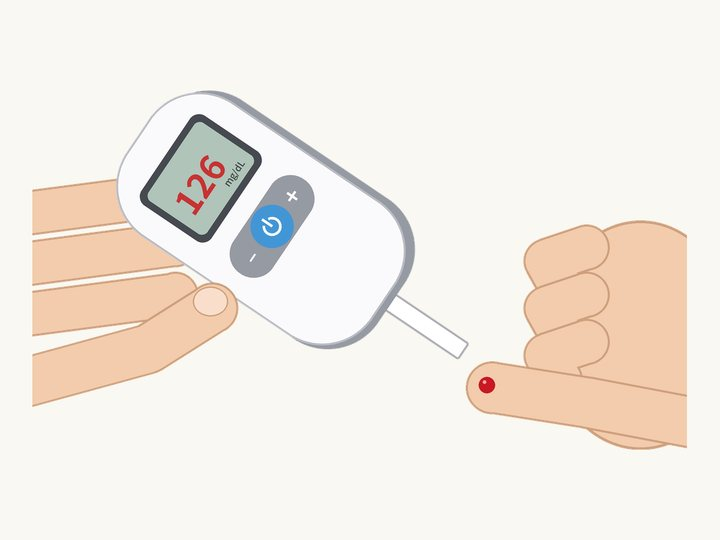

인슐린 없이 혈당 낮춘 이식 장치, 쥐는 성공했다
Maity, Guha Ray, Buchmann, Charpin-El Hamri, Fussenegger · Science, 2026

01결과
당뇨병을 앓는 사람은 혈당을 재고, 약을 먹고, 때로는 매일 인슐린 주사를 맞아요. 스위스 취리히 연방공대 연구팀은 전혀 다른 방법을 내놨어요. 피부 아래 넣은 작은 장치가 전기로 혈당을 직접 낮추는 방법이에요.
연구팀은 비만과 2형 당뇨병이 함께 있는 쥐에게 이 장치를 넣었어요. 장치를 켜자 높던 혈당이 60~90분 안에 정상 범위로 돌아왔어요. 인슐린도 약도 쓰지 않았어요.
연구 결과는 2026년 10월 과학 학술지 《사이언스》에 실렸어요.
02어떻게 작동하나
장치는 길이 3cm쯤 되는 작은 이식 장치예요. 안에는 스펀지처럼 구멍이 많은 흑연 위에 아주 작은 금 덩어리와 백금 알갱이를 붙인 '촉매'가 들어 있어요. 살아 있는 세포나 효소, 약은 들어가지 않아요.
전기가 흐르면 이 촉매가 몸속 포도당을 '글루콘산'이라는 물질로 바꿔요. 글루콘산은 콩팥을 거쳐 대부분 소변으로 빠져나가요. 남는 당이 지방으로 쌓이기 전에 몸 밖으로 내보내는 셈이에요.
켜고 끄는 것도 자동이에요. 팔에 붙이는 혈당 센서가 혈당을 계속 재다가, 기준보다 높아지면 블루투스로 스마트폰이나 스마트워치에 알려요. 그러면 휴대폰이 장치를 켜요. 혈당이 원하는 수준까지 내려가면 장치는 스스로 꺼져서 혈당이 너무 떨어지는 위험을 막아요.
전기는 배터리 없이 몸 밖에서 무선으로 보내요. 연구팀은 이 무선 전력·제어 부품이 이미 시중에 나와 있는 것들이라고 설명했어요.
03인슐린과 무엇이 다른가
인슐린은 피 속의 당을 근육이나 간, 지방 같은 몸의 조직으로 옮겨요. 혈당은 내려가지만 당 자체는 몸 안에 남아요.
이 장치는 남는 당을 아예 몸 밖으로 내보내요. 연구를 이끈 마르틴 푸세네거 교수는 "몸속 포도당이 남아도는 근본 원인을 겨냥한다"고 말했어요.
그래서인지 몸무게에도 변화가 있었어요. 6주 동안 장치를 쓴 쥐는 몸무게가 최대 10% 줄었고, 혈액 속 중성지방도 낮아졌어요. 연구팀은 쓸 수 있는 당이 줄자 몸이 지방을 태우기 시작한 것으로 보고 있어요.
04얼마나 안전했나
장치는 아주 낮은 전압으로 움직여요. 연구팀은 전기나 열 때문에 몸 조직이 상한 흔적은 찾지 못했다고 밝혔어요.
자동으로 켜지고 꺼지는 시스템은 쥐 8마리에게 2주 동안 시험했어요. 촉매는 피부 아래 넣은 지 최대 3개월이 지나서도 포도당을 바꾸는 힘을 유지했어요. 다만 장치 전체가 얼마나 오래 버틸지는 아직 확인하지 않았어요.
05나와 무슨 상관일까
전 세계 당뇨병 환자는 약 8억 3천만 명이에요. 연구팀은 이 장치를 의료 기기로 발전시킬 계획이에요. 효과와 안전이 확인되면 당뇨병 치료의 새 선택지가 될 수 있고, 당뇨병이 없는 사람의 체중 관리에도 쓰일 수 있다고 봐요.
다음 단계는 돼지와 양 실험이에요. 그 결과를 보고 나서야 사람 대상 시험을 생각할 수 있어요. 당장 병원에서 쓸 수 있는 기술은 아니에요.
06읽을 때 주의할 점
아직 쥐 실험이에요. 사람에게 써 본 적은 없어요.
연구에 참여하지 않은 미국 내분비 전문의 데이비드 클로노프는 "유망한 방법"이라면서도, 사람에게 쓰기 전에 위험부터 꼼꼼히 따져야 한다고 했어요. 글루콘산이 몸에 쌓이면 몸의 산·염기 균형이 흐트러질 수 있고, 소변으로 빠져나가면서 나트륨이나 칼륨 같은 전해질도 함께 잃을 수 있다는 거예요.
크기도 문제예요. 사람은 하루에 탄수화물을 250g쯤 먹지만 쥐는 2g 정도예요. 실험실에서 더 큰 장치가 어른 혈액량과 비슷한 5리터 용액의 포도당을 거의 다 없앴지만, 사람이 하루에 먹는 양까지 처리하지는 못했어요. 사람에게는 훨씬 큰 장치나 여러 개가 필요할 수 있어요.
혈당을 낮추는 것과 당뇨병을 고치는 것은 달라요. 인슐린은 혈당 말고도 몸에서 여러 일을 하기 때문에, 이 장치가 인슐린을 완전히 대신한다고 보기는 어려워요.
원 논문
- Maity et al. (2026), Science 394(6822), doi:10.1126/science.ady8560
- doi.org/10.1126/science.ady8560